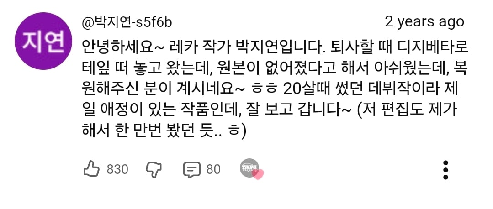
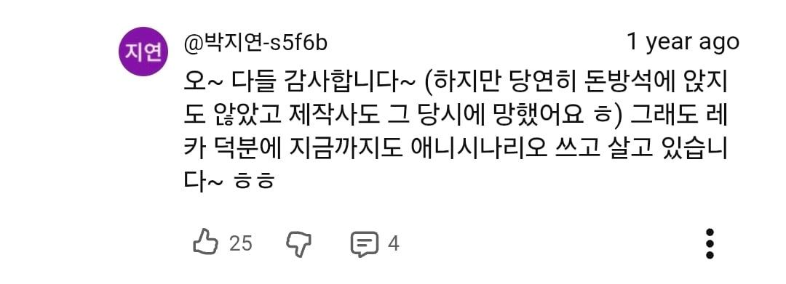
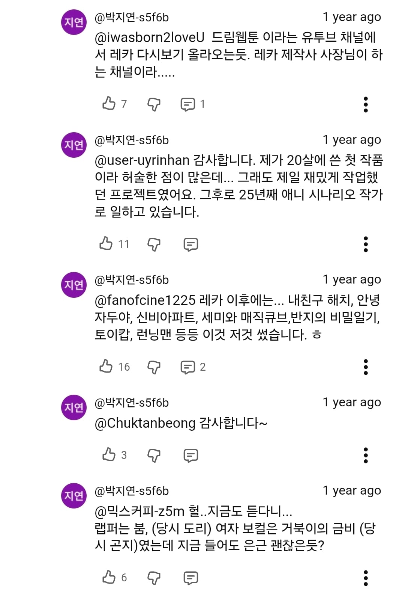
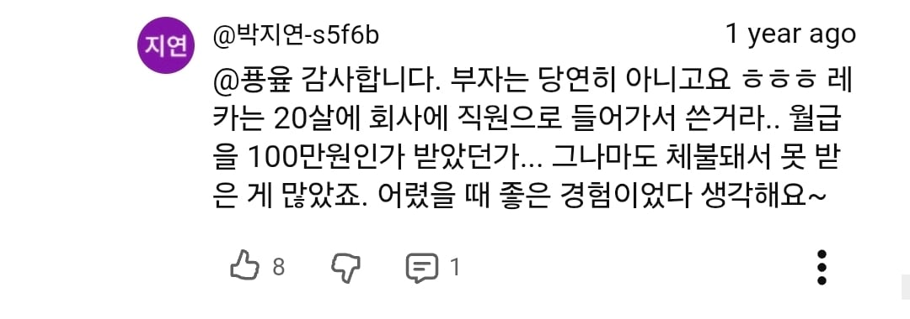
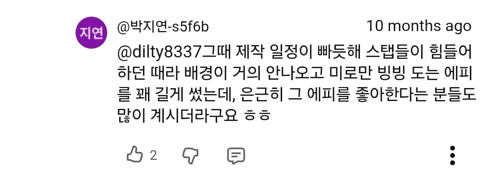

+ 작가님 댓글





뫼비우스의띠 모르는사람 없제~
+ 작가님 댓글





뫼비우스의띠 모르는사람 없제~
아군이된 적은 약해진다는건 국룰
레카...
렉카 렉카 짱짱!??
이건 또 EBS같은곳에서 했던거 같았는데
만화채널이 아니라
기억나네 ㅋㅋㅋㅋㅋ
남주 엄마가 몸이안좋아서 어떤흑막이 남주친구한테 남주엄마한테 주면 낫는약이야! 하고 속이고줘서 남주한테건네줬는데 알고보니 어디로 순간이동당하는거였나 봉인되는거인가 해가지고 남주가 찾으러가고 그런거있었는데
난 2020 원더키디 세대다!!
캐릭터들 의상이 당시 하던 아스가르드 라는 게임에
나오는 옷들하고 비슷해서 친근감을 느꼈었던 기억이 나네
거북선이 하늘을 날라다닌다고~
엔딩이 어떻게 되었는지 기억이 안남
전혀 모르겠는디
그래픽 기괴해서 안봄
노래는 아직도 들음.. 뫼비우스의 띠 칵테일 넘 좋음
뫼비우스의 띠는 희망봉이지
https://youtu.be/vR0G1sdht5w?si=55G8GvBsAlK30Fd9
모르겠음
ㄹㅇ 저 만화 엄청어렸을때 봤는데 유일하게 기억나는게 뫼비우스의 띠인지 무슨 토성 고리같은데서 계속 도는거
뫼비우스 띠가 기억에 더 남을 수 밖에 없는 게
딱 그 편까지만 방영하고 다시 1화 방영하더라
다음 주 다음 화 기대했는데 영문도 모른 채 다시 1화 재시청함
진짜 뫼비우스 띠는 이게 아니었을까
그뭐냐 타락했다가 주인공편 되는애 있는데 당시 간지난다고 생각했음
카다몬(슈리)
어릴때 재밌게 봤다는 기억? 느낌은 있는데 정작 내용은 주인공 친구 타락했다가 동료 되는거 밖에 기억안남
티몬과 품바만봐서 저거 엔딩만봄
내용은 전혀 기억이 안나고 노래는 아직도 생생하게 기억남ㅋㅋ
그때 당시에도 저 노래 좋아했었는데
엄마 찾는 내용이었나 진짜 옛날에 본거라 가물가물하네
정보) 레카는 붐이 소속했던 가수 레카가 오프닝곡을 불렀다. 의상도 레카 코스튬을 했었다.
89년생 EBS에서 재미있게 봤읍니다
레카,,,,
보바 색기들 오크 복붙 버전이었자너
레이디 그거 아닌가
레카!!! 추억의 애니